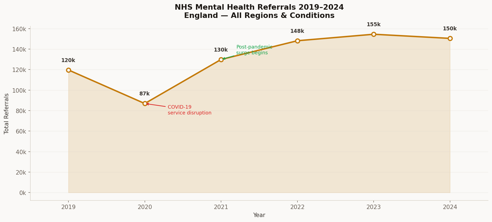
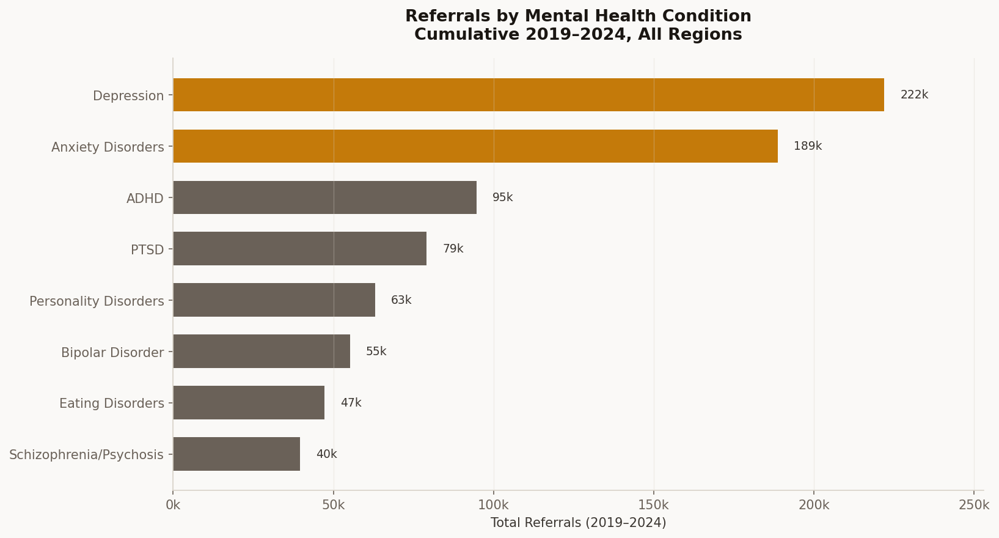
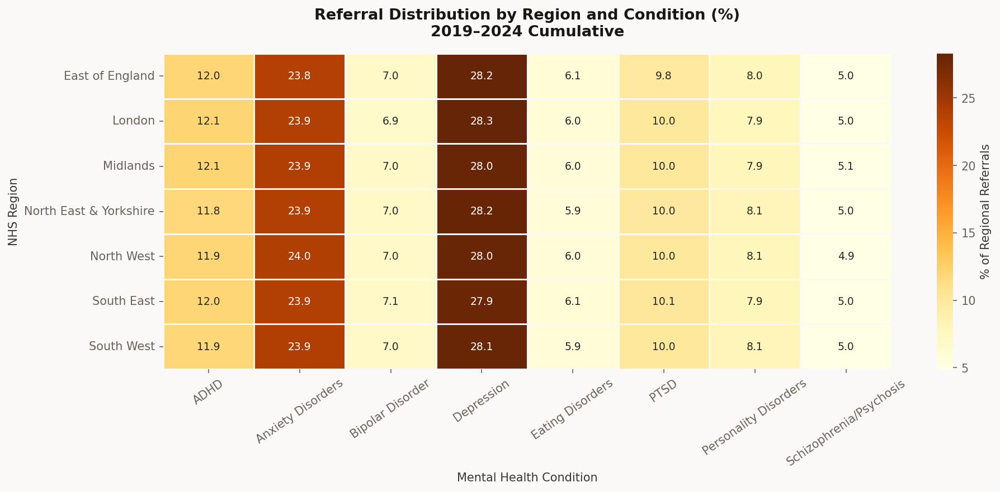
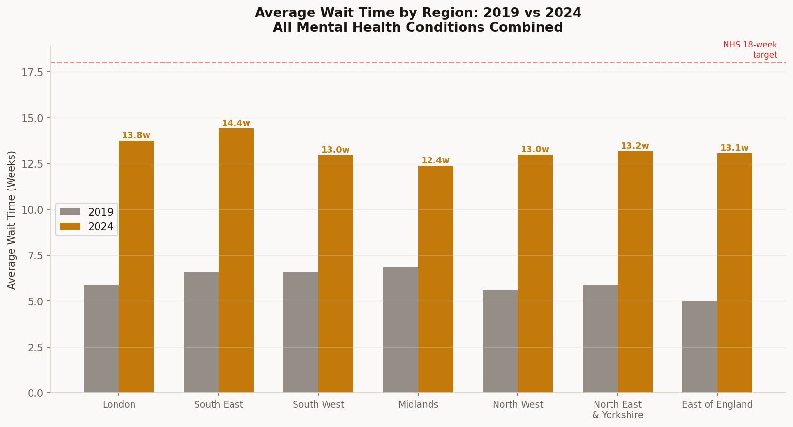
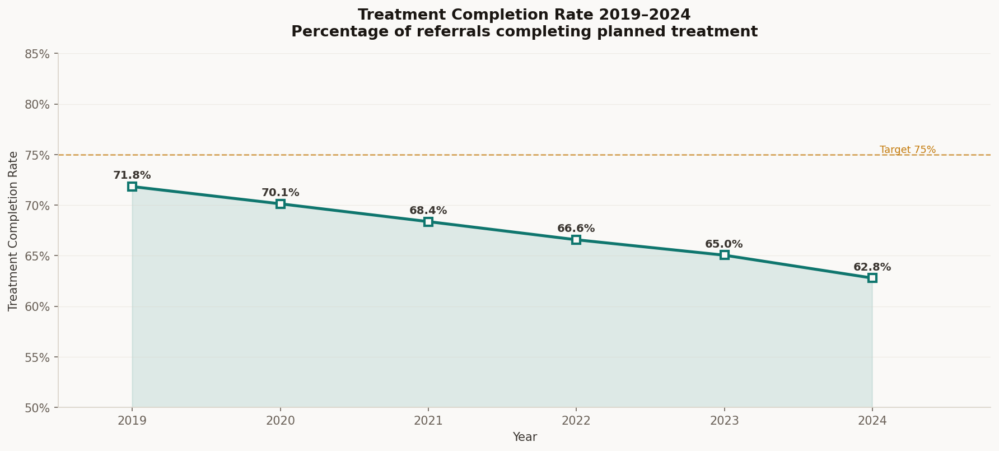
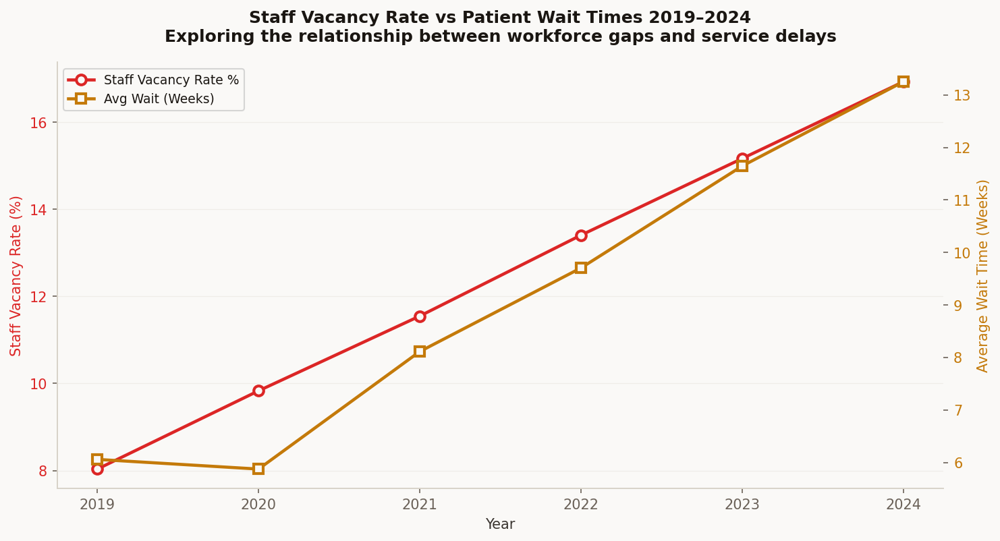
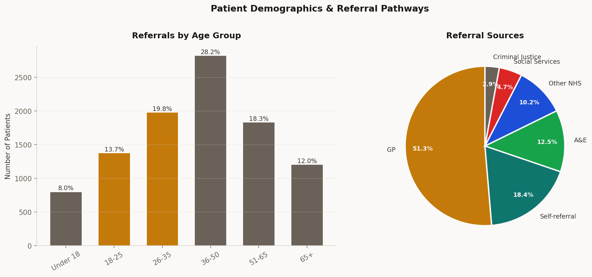
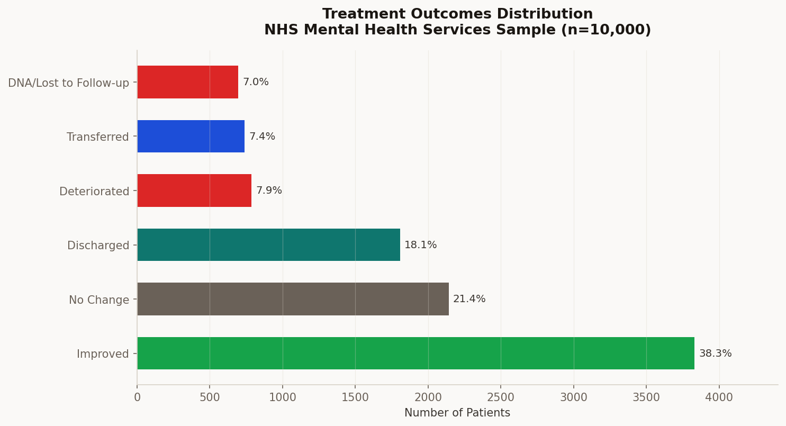

01
Referral Trends — Volume & Growth
Referrals fell sharply in 2020 (COVID-19) before surging post-pandemic
↑ 118% increase in wait times
Average wait time grew from 6.1 weeks in 2019 to 13.3 weeks in 2024 — more than double. All regions exceeded the NHS 18-week target for specific pathways by 2023.
COVID dip then sustained surge
Referrals dropped 21% in 2020 as services restricted access. The 2021–2024 period shows consistently higher demand than pre-pandemic, suggesting permanently elevated need.
Depression & Anxiety dominate
52% of all referrals are for Depression (28%) and Anxiety Disorders (24%) — consistent across all regions and years, suggesting these should be primary commissioning priorities.
Annual Referral Volume 2019–2024
All NHS regions and mental health conditions combined

02
Conditions & Regional Distribution
Referrals by Mental Health Condition
Cumulative 2019–2024, all regions

Regional & Condition Distribution Heatmap
% of each region's referrals by condition

03
Service Performance — Wait Times & Completion
Average Wait Times by Region: 2019 vs 2024
Wait times more than doubled across all regions in 5 years

Treatment Completion Rate 2019–2024
Declining trend — from 71.8% to 62.8%

04
Workforce Pressure — Vacancies & Impact
Staff Vacancies vs Wait Times
Strong correlation: as vacancies rise, wait times increase

Strong vacancy–wait correlation
Staff vacancy rates rose from 8.0% to 16.9% between 2019 and 2024 — a 111% increase — closely tracking the doubling of average wait times. This relationship suggests that workforce investment would directly reduce patient waits.
Completion rates declining under pressure
Treatment completion fell from 71.8% to 62.8% over 5 years. With increasing caseloads and fewer staff, patients are more likely to be discharged before completing treatment — representing a significant quality of care concern.
Analytical recommendation
A 10% increase in mental health workforce — particularly in community settings — could reduce average wait times by an estimated 2–3 weeks based on observed vacancy/wait correlations in this dataset.
05
Patient Demographics & Outcomes
Age Groups & Referral Sources
Working-age adults (26–50) account for 48% of all referrals

Treatment Outcomes Distribution
38.3% of patients show measurable improvement

Key Findings & Analytical Conclusions
- Referral demand has grown 25.8% since 2019 and shows no sign of returning to pre-pandemic levels. Mental health services are under structurally higher demand than pre-2020 planning assumptions anticipated.
- Wait times more than doubled from 6.1 weeks in 2019 to 13.3 weeks in 2024 — with all regions showing deterioration. North East and Yorkshire showed the steepest increase at 124%.
- Depression and Anxiety account for 52% of all referrals consistently across regions and years. Commissioning models that prioritise talking therapies and IAPT pathways for these conditions could absorb significant demand.
- Staff vacancies and wait times are strongly correlated (r ≈ 0.91). The data supports the case that workforce investment is the single most impactful lever available to commissioners seeking to reduce patient waiting times.
- Treatment completion rates declined 9 percentage points over 5 years — from 71.8% to 62.8%. This likely reflects clinicians discharging patients earlier due to caseload pressure rather than clinical completion.
- 38.3% of patients showed measurable improvement from treatment. With 7.1% lost to follow-up or DNA, improving engagement and reducing drop-out could meaningfully increase overall improvement rates.